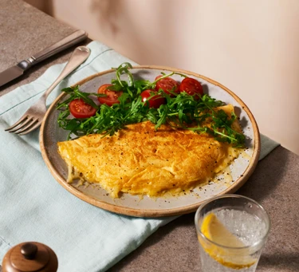

Image source: images.immediate.co.uk
Cheese Omelette
Simple and quick! Easy to make cheesy omelette, perfect for breakfast. Tip: for maximum flavour use mature cheddar.
This recipes is from bbcgoodfood.com
Ingredients
-
2 Eggs.
-
1/2 Tbsp olive oil.
-
1 Tbsp butter.
-
15g Mature cheddar, finely grated.
Steps
-
Crack eggs into a bowl and whisk well. Season with a pinch of salt.
-
Heat oil and butter over a medium-low heat in a medium sized non-stick pan.
-
When the butter starts foaming, pour the eggs into the pan and gently tilt the pan to spread the eggs evenly around the base of the pan.
-
Draw in the egg mixture from the sides of the pan using a spatula to create folds in the centre.
-
Repeat step 4 once or twice. Leave the eggs for 2-3 mins to cook gently until there's a small amount of raw egg in the centre.
-
Add the cheese and carefully fold the omelette in half with the spatula.
-
Take the omelette of the heat and let the cheese melt in the pan for about 1 minute.
-
Slide onto a plate and serve with some black pepper.
-
Enjoy!
{kind=link}